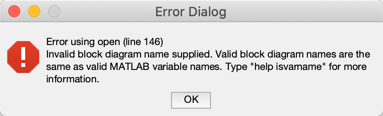

Peer assessment is valuable for the following three reasons:
The claims on this and the next two lab submissions will be moderated by Peer Assessment. Each one of you will be asked to review three of this first submission, two of the second and one of the third.
For this lab exercise, the peer assessment is worth five marks. There is a total of 10 marks available for your participation in peer assessment.
As a peer assessor, you will be required to review three of these submissions and let me know if you agree with the self-assigned score.
To complete your peer assessments, you should download and run the MATLAB Live Scripts and Simulink models and check that the results are correct and complete.
University policy requires that staff submit feedback on coursework within three weeks of the submission deadline. As I need to moderate all peer assessment marks before I can release the marks and feedback, this means that all peer assessment has to be completed within two weeks -- preferably one week -- of the peer assessment window opening.
Therefore, do please do give any outstanding peer assessments priority!
To perform an assessment, you will need access to MATLAB and Simulink. For compatibility reasons, you should use the version of MATLAB that is installed on the shared University desktop. (Although newer versions of MATLAB will open older versions of Simulink files, the reverse is not true.) If you have problems running any files that are submitted, first check the note about file names below, and make any adjustments necessary. If you still have problems, note this in your feedback.
To perform a Peer Assessment you should visit each submission, review the claim form submitted and download the attached files. I would recommend that you create a folder for each submission. I would also recommend that you clear the MATLAB workspace (see command below) before testing each set of submitted files.
matlab
clear all
Because files represent executable functions in MATLAB, the names you give to a file (before the prefix) has to be a valid variable name and obey the published rules (See Variable Names in the MATLAB help documentation).
If you see an error dialogue like this:

please rename the file so that it matches the rules that MATLAB uses to test that the variable name is valid:
isvarname.
You are most likely to see this error when executing a Simulink file or a ordinary script (*.m) file. Live Script files (*.mlx) will probably run without errors.
The reason I am stressing this is because Canvas may display a Simulink file as single.slx inside the grading system but it will have actually renamed your file to something like anon_5j37y_536117_single-1.slx. In a case like this, there will definitely be an error because of the -1 in the file name. Canvas has added this because your peer made more than one submission. As a general rule, it is safest to right-click the link and use save as to save the file to disk before openining it in MATLAB rather than clicking the file inside Canvas and relying on the open feature of your operating system.
Use the grading rubric to confirm your peer's self assessment. It is important that you know that you are not marking the submission for correctness, only for completeness and the accuracy of the claim. You may may suggest a higher mark if you feel that your peer has done more than they are claiming and a lower one if you think they haven't done everything required. You must give a reason for your score if it does not agree with the student's own self-assessment.
I will have to moderate all grades and I will be checking at any disputed submissions. In the end, the final mark awarded will be my decision not yours!
You should also provide feedback on the student's approach to the lab exercise. Your comments might include comments on:
Note that the instructor will moderate all peer assessments before assigning the final grade.
More information on how the Peer Assessment feature works in Canvas is given in the Student Guide: